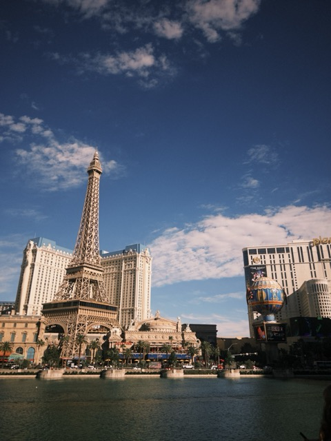

Bellagio
O by Cirque du Soleil
O is one of the most iconic Las Vegas productions because it combines theater, acrobatics, and a full aquatic stage. It stood out on this trip as a classic Vegas show-night experience.

More trip photos for Las Vegas will be added soon.